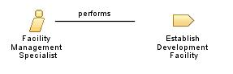

| Role: Facility Management Specialist (040675) |
 |
|
Relationships
 |
||
| Modifies |
|
|
|---|---|---|
Main Description
This role identifies problems related to facilities management installation, update, configuration, operations, or performance. Understands hardware environment options related to the interaction with the operating environment. Has knowledge of the client's availability and performance requirements of the hardware and software configuration. Usual components of facility planning include:
|
Staffing
| Skills |
|
|---|
More Information
| Supporting Materials |
|---|
| © Copyright IBM Corp. 1987, 2012 All Rights Reserved Property of IBM These materials are intended only for use as part of an IBM engagement |